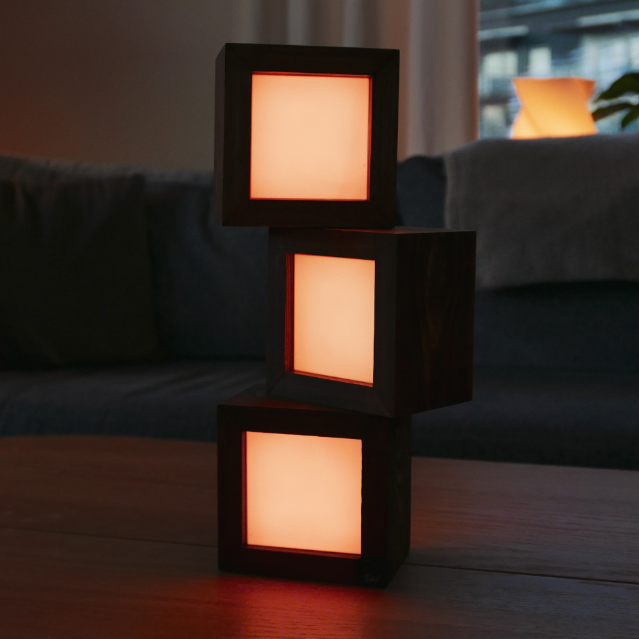
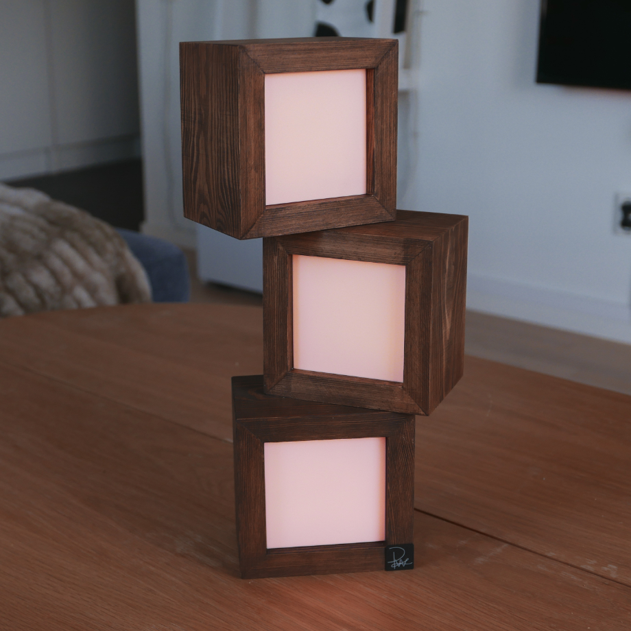
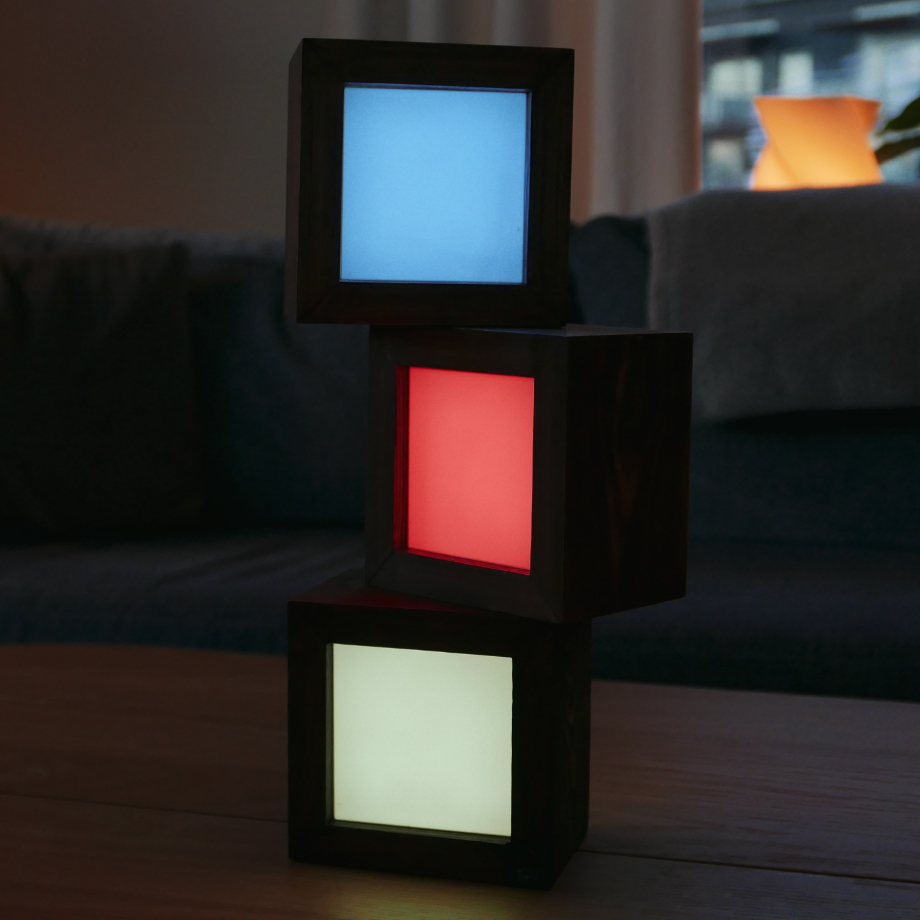
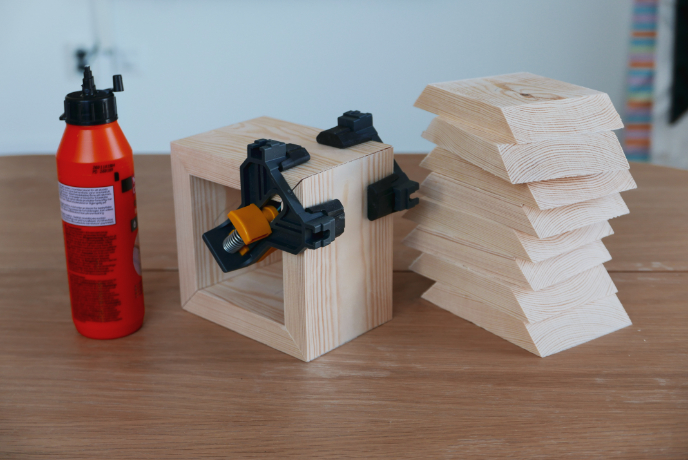
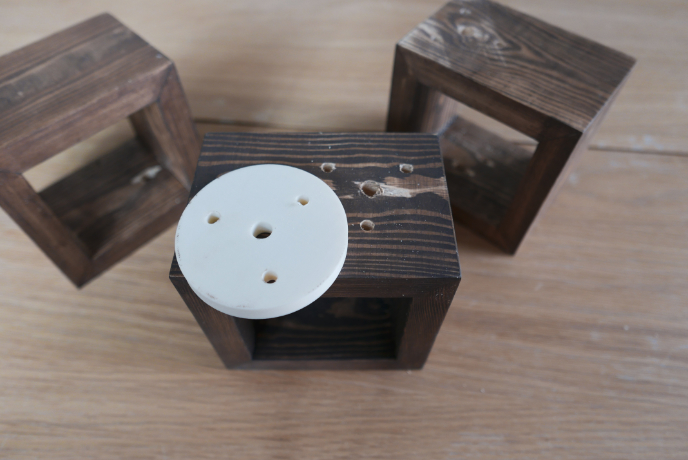
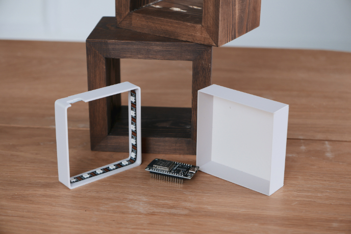
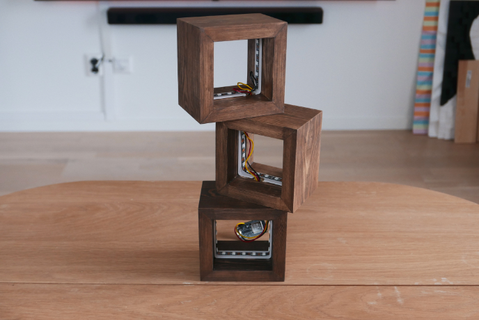
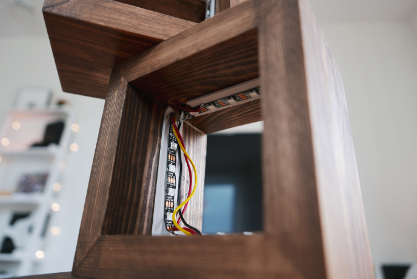

Ville bli bättre på att göra bra lådor/kuber
Som allt annat så slutade de med att jag gjorde en lampa
Blev nog inte mycket bättre på att göra lådor men fick öva lite iallafall




Började med att såga till trä och limma ihop det till 3 lika stora lådor
Skaffade mig någon liten cool grej för att limma sidorna i 90 grader
Hjälpte ganska mycket men det blev ändå inte perfekt för billig furu är ungefär lika bra som som de låter
Kunde dölja de mesta med spackel och bets dock så ingen större fara

För att sätta ihop de olika kuberna använde jag träplugg och lite lim
Printade ut en liten guide som gjorde de enkelt att få hålen på rätt ställen
Behövde dra lite kablar mellan varje kub så detta gjorde de enkelt att göra hål för de med

På insidan satte jag WS2812b lister och en ESP32
Va lite orolig att ljuset inte skulle bli jämnt fördelat men så fort jag satte på fram och baksidan funkade de precis som tänkt
Jag va lat och orkade inte åka och köpa rätt kabel så använde en på tok för tjock kabel som jag hade hemma
Är väl inte riktigt designad för att vara lätt att laga om något går fel men vem bryr sig

Det syns inte så dyligt men den understa kuben fick en lite annan färg
Råkade använde fel bets först och försökte slipa bort de från denna men tydligen fanns de lite kvar så den är lite mörkare
Sånt som händer

Hade nog gärna designat något bättre system för att löda ihop de olika listerna med om jag hade gjort den igen
Lär mig aldrig att de suger att bygga saker som detta och att det är bättre att lösa de i designen istället för att sitta och löda småpiss